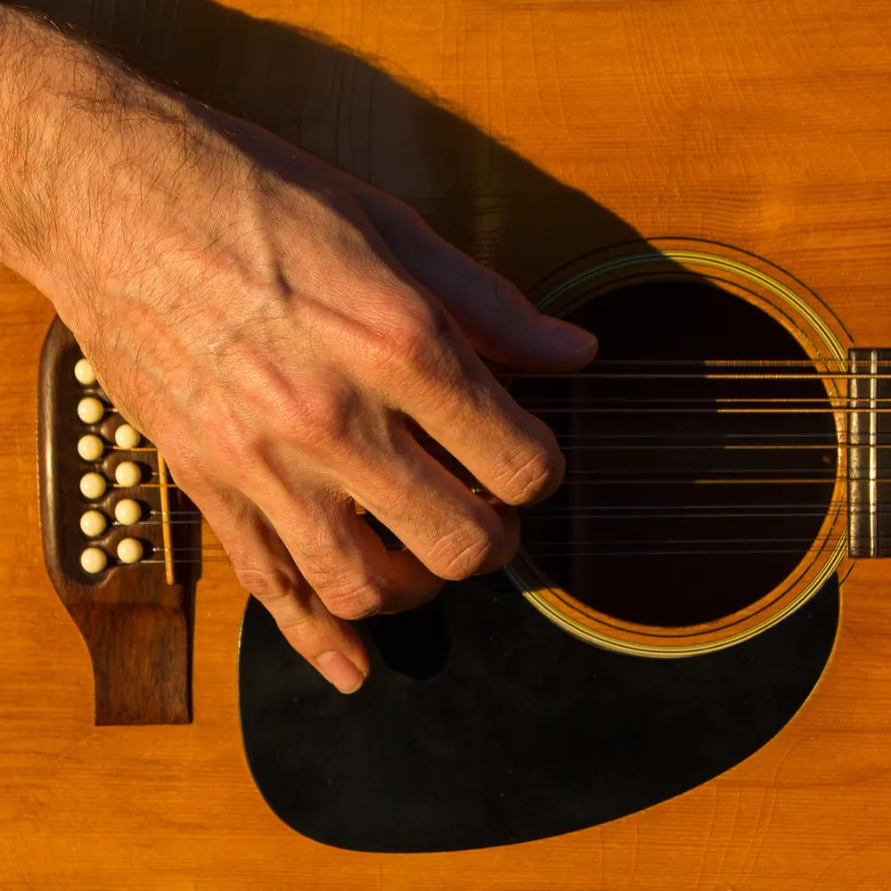

AboutOnly guitar, no vocals
Born and raised in Brazil, Evandro picked up the guitar at 14. Classic rock came first. Then he found the great folk guitarists: Bert Jansch, Leo Kottke and John Fahey. After a move to a small Austrian village, he began to write his own pieces.
Life took some turns, and the music paused for years. He started recording again in 2018, lost the thread when the pandemic hit, and picked it back up in 2023.
He lives in Freiburg, Germany.
LiveConcerts
No dates right now. For concerts, house concerts and small festivals, write to me:
music@dresch.org